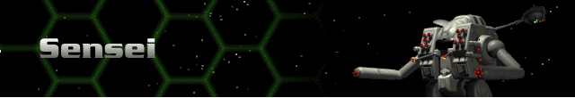
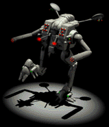

› |
› |
› |
› |
Sensei |

|
Chassis: Sensei The Sensei is what the Shadow should have been: bigger, tougher, and more weapon types. It was designed with the Command Bioderm in mind. It offers speed, sensors, varied weapons, and some protection. Standard equipment: Scout Sensor 22.8 Amplitude, a Fission 150 reactor, Bertrand-Altase targeting computer, Shield 600 shield class, Chemical 150 battery, Standard Life Support, 11cm armor, Pre-Flexive drive system, a jump capability of two, and secondary movement yield. Available at Tech Level 1. |
 |
Max. Weapons Capabilities
These are all of the weapons which can be mounted to this Herc once you have reached all Technology levels through promotions.
| Energy | Missile | Cannon | Plasma | ELF | Adv. Tech. |
|---|---|---|---|---|---|
| SE400 Laser Cannon | SP Missiles | 20mm Autocannon | Fusion Flamer | Lt. ELF | Neutron Gun |
| SC400 Comp. Laser | SG Missiles | 30mm Chain Gun | Auto ELF | Thermal Lance | |
| SP500 Lt. Pulse Laser | MicroMissiles | 50mm Autocannon | Chain ELF | EMP Blaster | |
| Saturation Missiles | 90mm Accel. Cannon | Lt. Particle Gun | |||
| H-K Rapid Missiles | 100mm Accel. Chain Gun | EMP | |||
| Rapid Saturation Rockets | Thermal Needler | ||||
| SP2 Hvy. Missiles | |||||
| MY Missiles | |||||
| Jihad Missiles | |||||
| HOG Missiles | |||||
| Katyusha-Z Rockets |